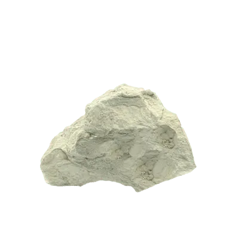

Mineral Grimoire
 Chalk
Chalk
Appearance
White. Powdery stone. Easily obtained.
Origin
UK, Northern Europe, Britain, France, Denmark, Germany, United States, Australia
Attributes
Chalk has a coherent information field that connects to the far past. Many sacred sites are on chalk because of its receptivity to spiritual energies and the fluidity it imparts to metaphysical working. Combines with Preseli Bluestone to create a battery that powers the environment, overcoming energetic depletion. It supports during changes, aiding your survival instincts. Highly absorbent, it draws off toxicity, cleansing the aura and releasing fluid from the physical body.
Healing
Containing a high degree of calcium, Chalk reputedly energetically assists with the skeletal system and to detoxify the organs of elimination. Chalk facilitates earth healing.
Position
Grid with Bluestone to create an environmental battery, hold or position as appropriate
Additional Notes
Coherent information field that connects to the far past, receptive to spiritual energies